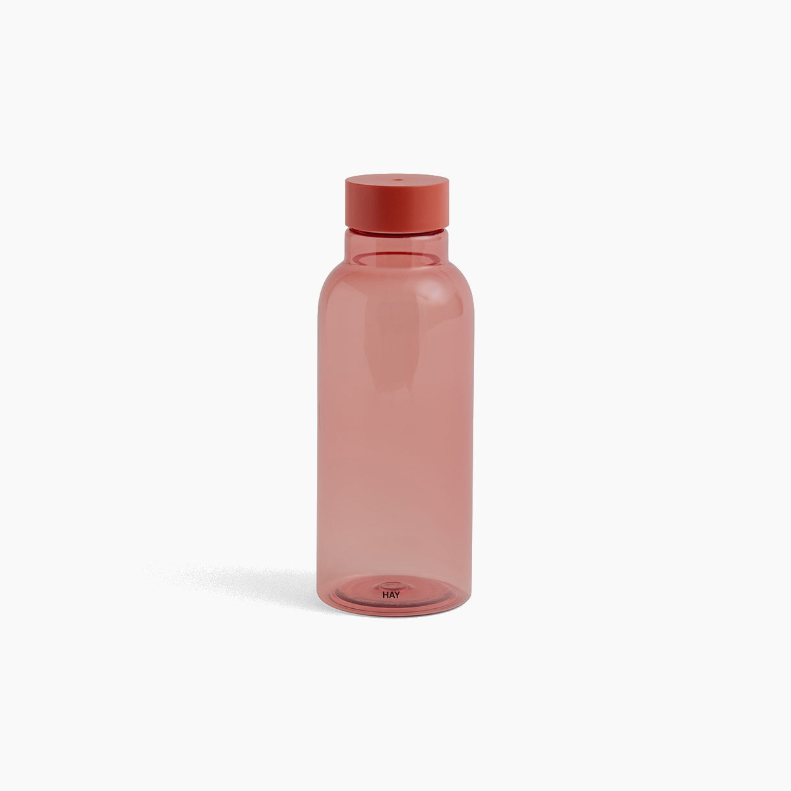
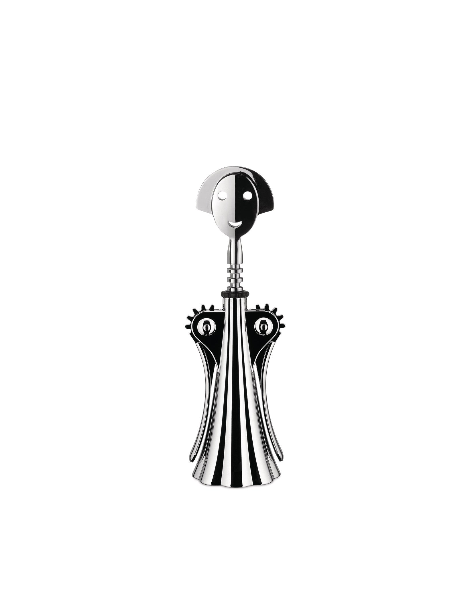
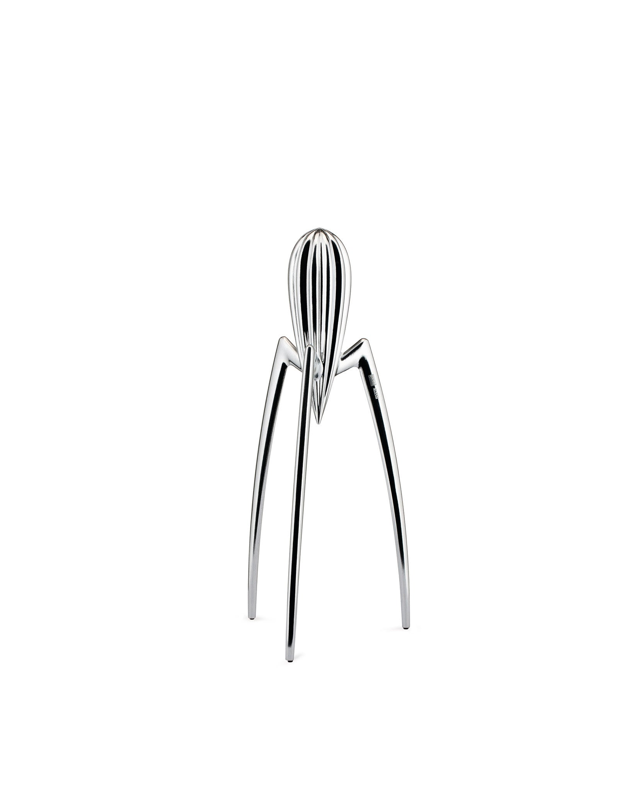
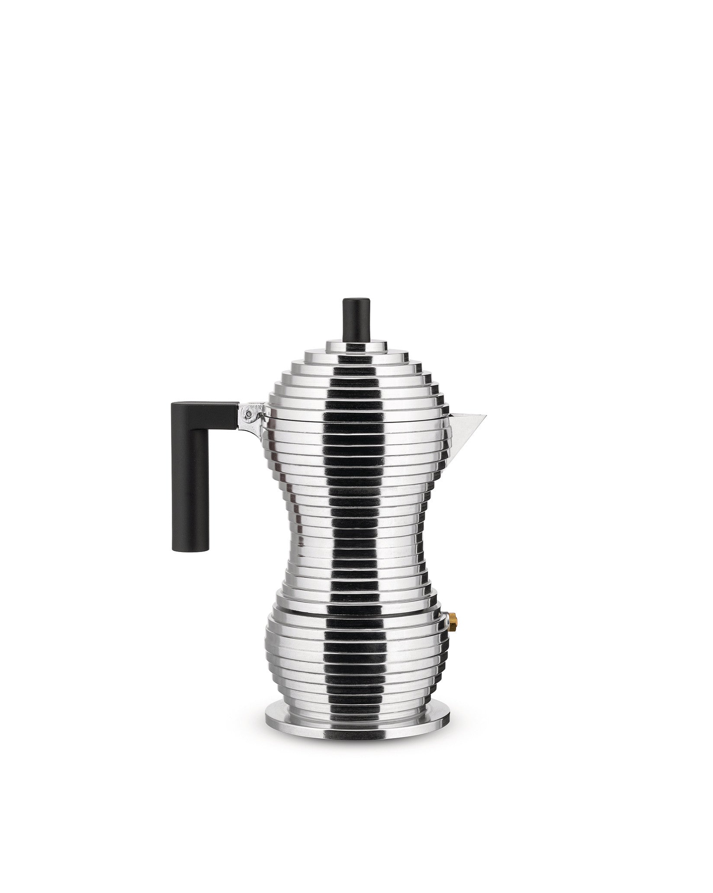
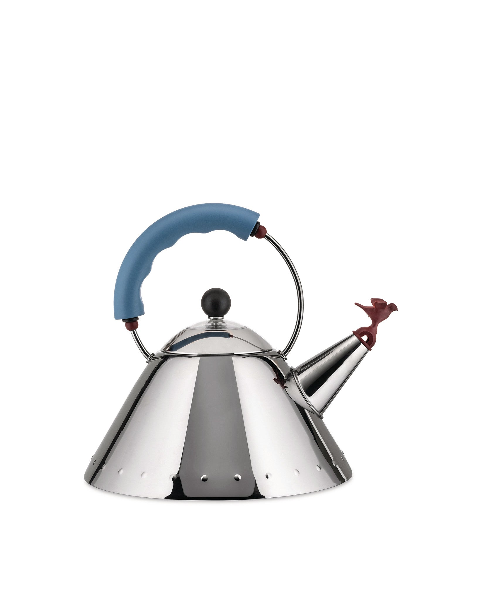
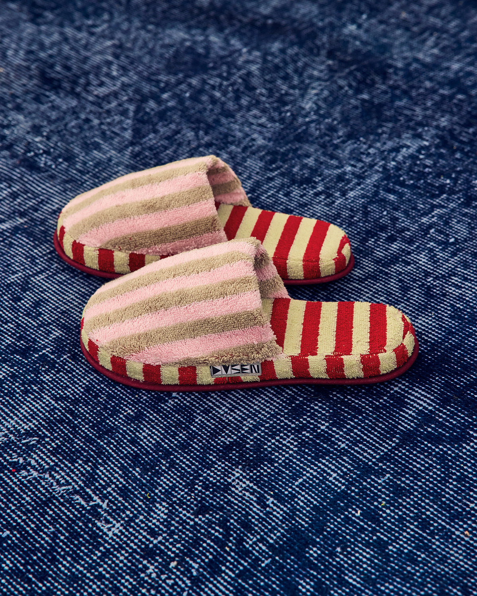
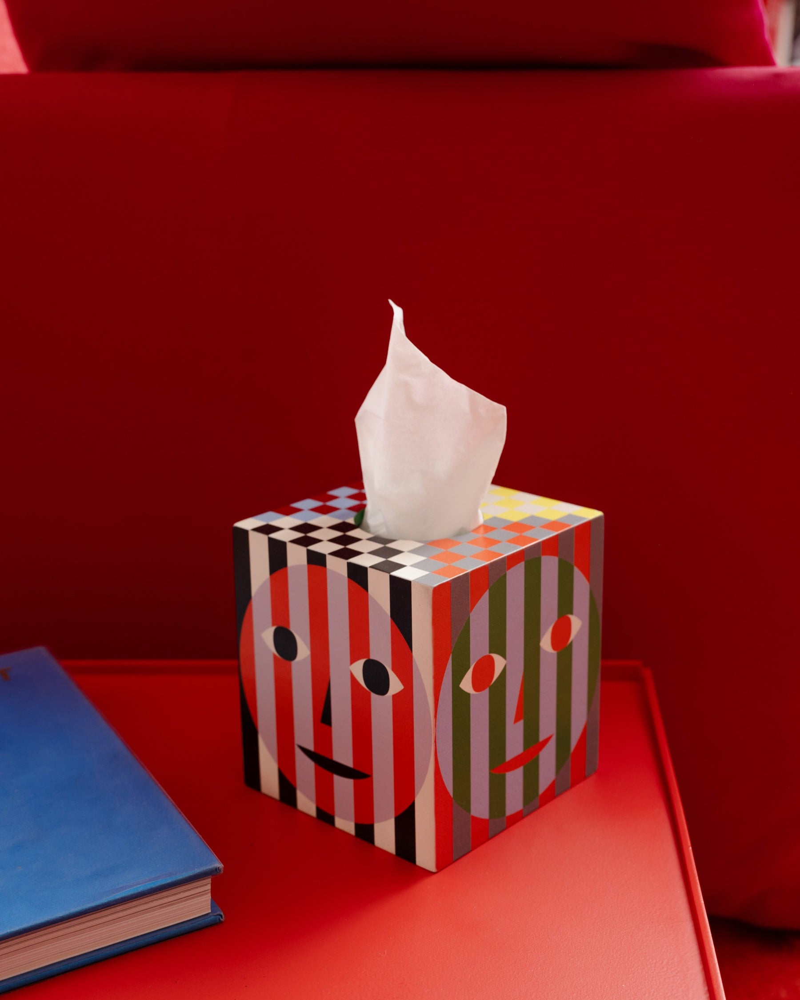
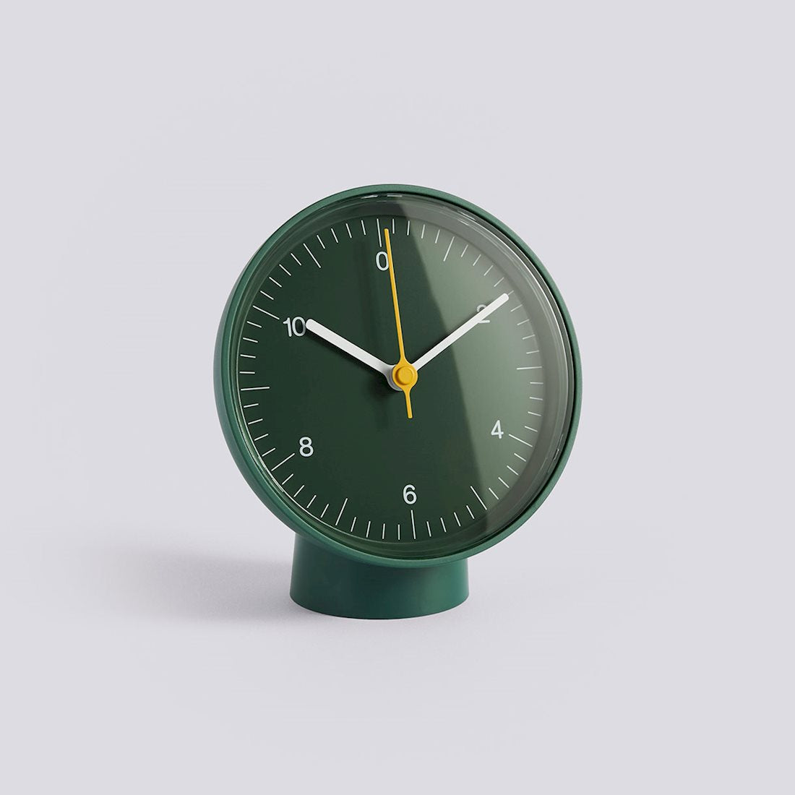
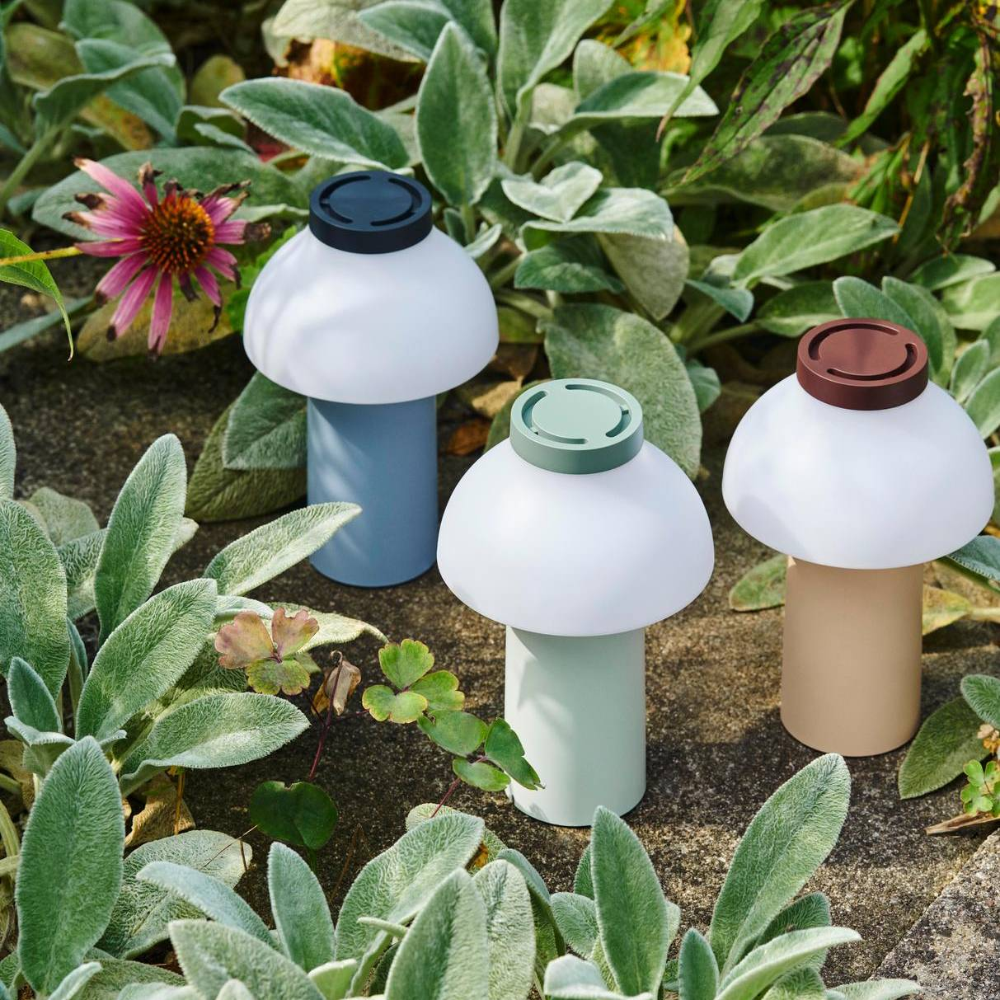
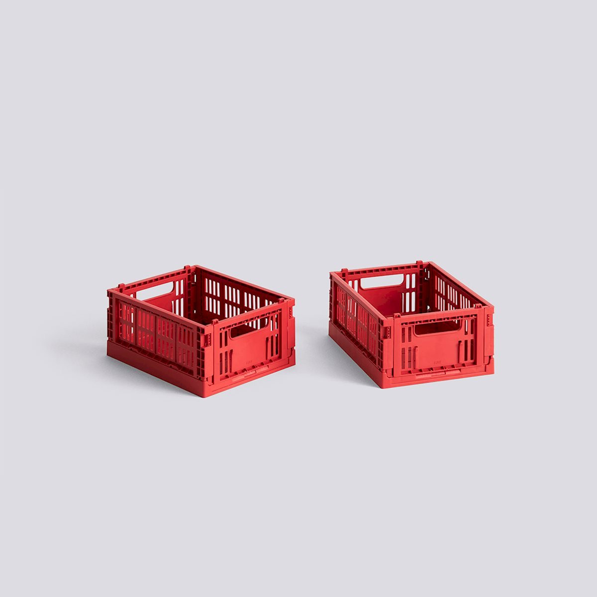

Miz Water Bottle, Red
深澤直人がデザインした、スリムなウォーターボトル。
画像の出典日々の暮らしに、なじみのある個性を。
条件に合うオブジェクトはありません。
好きな方向にドラッグして移動できます。矢印キーでグリッドを移動し、Enterキーで中央のオブジェクトを開きます。「一覧」ではすべてのオブジェクトを順番に読めます。

深澤直人がデザインした、スリムなウォーターボトル。
画像の出典
アレッサンドロ・メンディーニによる、笑顔の人型コルクスクリュー。
画像の出典
フィリップ・スタルクが手がけた、彫刻のようなシトラススクイーザー。
画像の出典
ミケーレ・デ・ルッキによる、段状のフォルムのエスプレッソメーカー。
画像の出典
鳥の形の笛を備えた、マイケル・グレイヴスのケトル。
画像の出典
Dusen Dusenのストライプ柄のテリースリッパ。
画像の出典
Dusen DusenとAreawareによる、カラフルなティッシュボックスカバー。
画像の出典
ジャスパー・モリソンがデザインした、コンパクトな置き時計。
画像の出典
ピエール・シャルパンがデザインしたポータブルランプ。
画像の出典
鮮やかな赤の、小さく積み重ねられる収納クレート。
画像の出典条件に合うオブジェクトはありません。